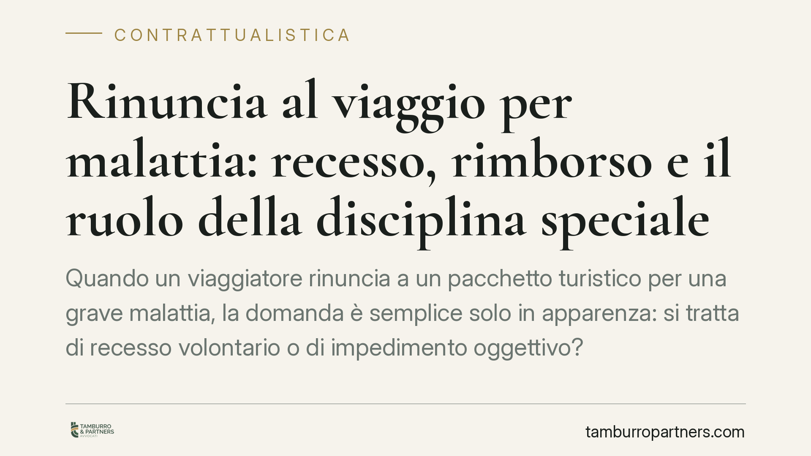

Rinuncia al viaggio per malattia: recesso, rimborso e il ruolo della disciplina speciale
Quando un viaggiatore rinuncia a un pacchetto turistico per una grave malattia, la domanda è semplice solo in apparenza: si tratta di recesso volontario o di impedimento oggettivo? La qualificazione incide direttamente su quanto può essere trattenuto dal tour operator e su quanto spetta a titolo di rimborso. Il tema è governato da una disciplina speciale e da orientamenti giurisprudenziali tutt'altro che uniformi.

Il fatto e la domanda giuridica
Il caso tipico è ricorrente: un consumatore acquista un pacchetto turistico, poi sopraggiunge una malattia grave — propria o di un familiare — che gli impedisce di partire. L'agenzia o il tour operator applicano le penali di cancellazione previste dal contratto, spesso prossime all'intero importo. Il viaggiatore contesta e chiede la restituzione delle somme.
Il punto controverso è la qualificazione dell'evento. Una rinuncia dettata da malattia grave è un recesso volontario del consumatore — con le penali contrattuali conseguenti — oppure un impedimento oggettivo che incide sulla sorte del contratto e sui rimborsi? La risposta non è uniforme e va ricostruita caso per caso.
Inquadramento normativo
Il turismo organizzato è materia regolata in via speciale dal Codice del Turismo (D.Lgs. 79/2011), attuativo della normativa europea sui pacchetti. Gli artt. 32-51 disciplinano in modo autonomo diritti e obblighi delle parti. In particolare, l'art. 41 regola il recesso del viaggiatore prima dell'inizio del pacchetto: è ammesso in ogni momento, di regola dietro pagamento di spese di recesso adeguate; ma, in presenza di circostanze inevitabili e straordinarie verificatesi nel luogo di destinazione o nelle immediate vicinanze, il viaggiatore ha diritto al rimborso integrale senza penali.
Vale un principio di base: la *lex specialis* del Codice del Turismo prevale sulla disciplina generale del codice civile. Gli artt. 1463 e seguenti c.c. sull'impossibilità sopravvenuta restano la cornice di chiusura, ma non vanno applicati in modo automatico come se fossero l'unica fonte.
Qui sta la difficoltà. L'art. 41 àncora il rimborso pieno a circostanze straordinarie nel luogo di destinazione (un'epidemia, un disastro, un'instabilità grave): una malattia personale del viaggiatore non vi rientra in modo diretto. Da qui il dibattito giurisprudenziale.
La questione dell'impossibilità di utilizzazione
Una parte della giurisprudenza di legittimità (orientamenti della Sez. III della Cassazione) ha affrontato casi analoghi non tanto in termini di impossibilità della prestazione del tour operator — che resta materialmente eseguibile — quanto di impossibilità di utilizzazione della prestazione da parte del creditore. Il ragionamento muove dalla causa concreta del contratto: la finalità turistica. Se quella finalità diventa irrealizzabile per un fatto non imputabile al viaggiatore, il vincolo può sciogliersi con effetti restitutori, in tutto o in parte.
Si tratta, va detto con chiarezza, di un terreno controverso. Molto dipende dalla gravità e dall'oggettività dell'impedimento, dal momento in cui si verifica, dalla documentazione prodotta e dalle clausole contrattuali. Affermare in termini assoluti che spetti sempre il rimborso integrale — a prescindere dalle polizze — sarebbe una semplificazione non sostenibile.
Il ruolo dell'assicurazione
Le polizze annullamento viaggio coprono proprio questo rischio e, quando attivate, risolvono la gran parte dei casi senza contenzioso. Ma l'esistenza o l'assenza di una polizza non muta la qualificazione giuridica dell'impedimento: la copertura assicurativa è uno strumento aggiuntivo di tutela, non il presupposto del diritto al rimborso. Se l'impedimento è qualificabile come oggettivo e rilevante, il diritto restitutorio verso il professionista va valutato in sé.
Implicazioni pratiche
Per il viaggiatore: la differenza tra rinuncia volontaria e impedimento oggettivo può valere l'intero prezzo del pacchetto. La prova dell'impedimento — soprattutto quella medica — è decisiva.
Per tour operator e agenzie: l'applicazione automatica di penali elevate espone a contestazioni, specie quando l'impedimento è grave, documentato e tempestivamente comunicato.
Cosa fare in concreto
- Viaggiatori: comunicate l'impedimento per iscritto e senza ritardo, allegando certificazione medica dettagliata (diagnosi, data, prognosi, inidoneità al viaggio); conservate contratto, condizioni generali e ricevute.
- Viaggiatori: verificate se avete sottoscritto una polizza annullamento e attivatela nei termini indicati, senza rinunciare agli altri rimedi.
- Agenzie: distinguete nella gestione del caso tra recesso volontario e impedimento oggettivo documentato, evitando l'applicazione indiscriminata delle penali massime.
- Tour operator: riesaminate le clausole di recesso alla luce del Codice del Turismo, assicurandone la proporzionalità e la trasparenza.
- Tutti: valutate la posizione caso per caso, perché la qualificazione dipende da circostanze, tempistiche e prova dell'impedimento.
Conclusione
La linea di confine resta la distinzione tra scelta volontaria e impedimento oggettivo non imputabile. Attorno a questa distinzione, e alla solidità della prova, si gioca il diritto al rimborso. Consigliamo di documentare con cura ogni impedimento e di non dare per scontata né la penale piena né il rimborso integrale: la soluzione dipende dalla disciplina speciale e dalle circostanze specifiche.
---
Contributo informativo a cura di Tamburro & Partners - Avv. Giuseppe Tamburro. Non costituisce parere legale.
Ogni contratto ha il suo equilibrio.
Se vuoi una revisione delle clausole o una redazione su misura, scrivi allo studio. Ti rispondiamo entro un giorno lavorativo.